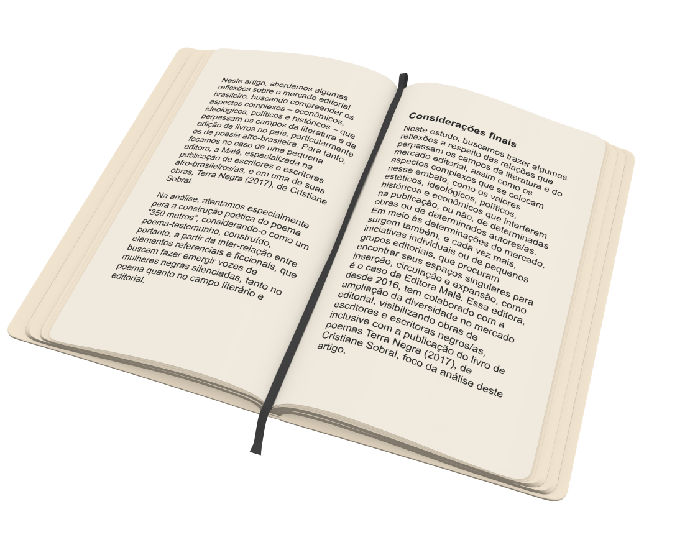

Cristiane Sobral nos desnuda com uma poesia repleta de personalidade,
cores, aromas, enredos densos e escreve como uma tribo. É conhecedora.
Caminha sem solidão, pois traz consigo as hordas dos povos em
diáspora, inebriados e entrelaçados em sua narrativa ética, estética e
caudalosa.
Contos curtos, quase poesias que descrevem o cotidiano do negro, da
negra, do povo preto e suas passagens aonde go da história, revelando
racismo, emponderamento, luta de classe entre outras discursivas.

Resumo
Terra Negra é uma obra cativante da autora Cristiane Sobral. A trama
nos transporta para um cenário mágico e misterioso chamado Terra
Negra, onde somos apresentados a personagens envolventes e uma trama
cheia de desafios e aventuras. No centro da história está Ana, uma
jovem curiosa e determinada que busca desvendar os segredos do passado
de sua família e da própria Terra Negra. Ao longo da narrativa, Ana
forma laços significativos com outros habitantes, como Miguel, um
aprendiz de alquimista, e Luna, uma guardiã dos segredos da terra. A
narrativa se desenvolve através de jornadas emocionais e físicas,
enquanto os personagens enfrentam obstáculos intrigantes, confrontam
inimigos poderosos e exploram locais mágicos e desconhecidos. A
amizade e a coragem desempenham papéis fundamentais à medida que eles
trabalham em equipe para superar desafios.
Autora
Cristiane Sobral, atriz, escritora e poeta, nasceu na zona oeste do
Rio de Janeiro, no bairro Coqueiros, em 1974 e hoje mora em Brasília.
Entre 1989 e 1998, teve como prioridade sua formação profissional.
Iniciou as atividades artísticas em 1989, no Rio de Janeiro, em um
curso de teatro do SESC, encerrado com o espetáculo “Cenas do
Cotidiano”. Em 2010, lança sua primeira publicação individual, Não vou
mais lavar os pratos, com poemas de grande impacto, a começar pelo que
dá título ao livro, até hoje um de seus textos mais celebrados e
declamados em público. Em 2016, retoma sua veia narrativa com os
contos de O tapete voador, para, no ano seguinte, brindar seus
leitores com mais um volume de poesia – Terra negra. Este último tem
destacada sua "cadência cênica" pela prefaciadora Elisa Lucinda, para
quem "tem cor esse livro, tem batuque na elegância rítmica deste
falar.

 Compre na Amazon
Compre na Amazon